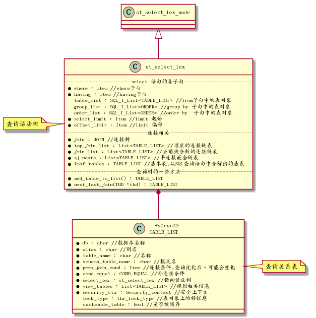
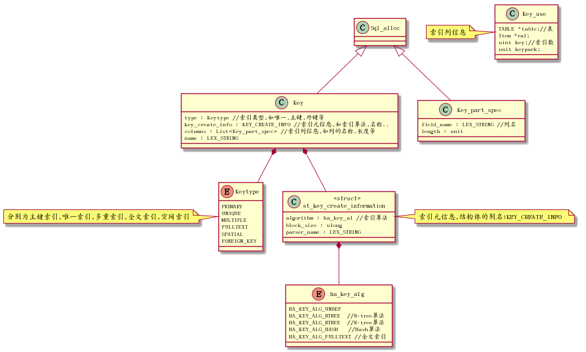
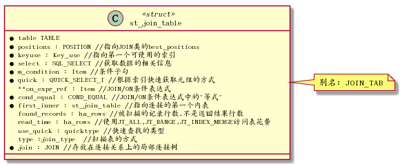
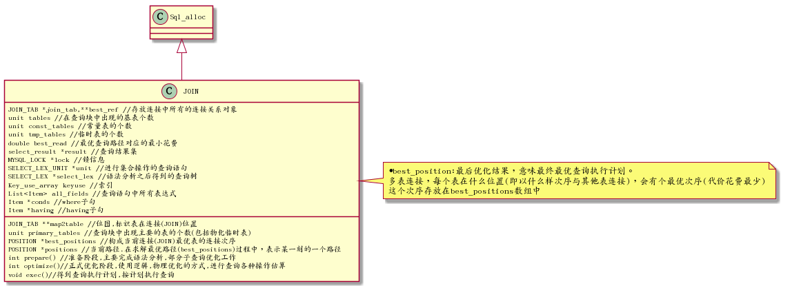
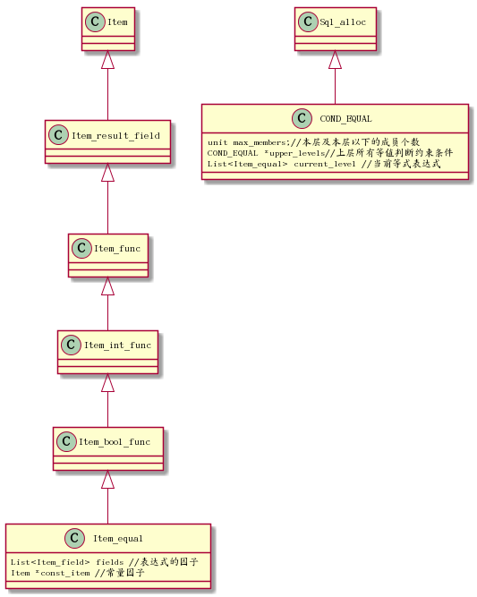
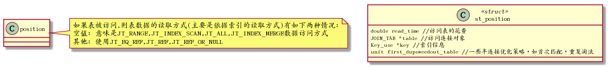
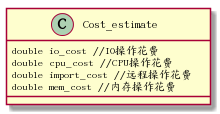

1 Mysql查询执行过程
1.1 查询执行过程
1.1.1 语法分析阶段
将sql查询语句变换成为一查查询树st_select_lex传给优化器,并对sql表达语义进行检查
1.1.2 生成逻辑查询执行计划阶段
遍历查询树,确定关系是否是常量表,为每个关系查找可用索引,运用关系代数原理和启发式规则优化
1.1.3 生成物理查询执行计划阶段
对每个关系尽量利用索引计算其代价,找出代价最小的路径后保存到JOIN类的best_positions
1.1.4 执行查询执行计划阶段
2 表数据的访问方式
2.1 常量表
- system表: 表中只有一行数据
- const表: 经where语句中限制条件(column=常数)筛选后只有一行数据，这表明column列上有索引，而且索引可能是主键列或唯一列,结果是0行或1行
代码表示方式可参考:sql_opt_exec_shared.h的 enum join_type
| 类型 | 代码表示方式 | 说明 |
|---|---|---|
| system | JT_SYSTEM | 常量表情况一,表上只有一条元组匹配 |
| const | JT_CONST | 常量表情况二,最多有一条元组匹配 |
| eq_ref | JT_EQ_REF | 参与连接运算的表,且是内表.基于索引(连接字段上存在唯一索引或主键索引，且操作符是"="的谓词,连接字段不能为NULL)做扫描, 使得对外表的一条元组内表只有一条元组与之对应 |
| ref | JT_REF | 可用于单表扫描或连接 ,参与连接运算的表是内表.基于索引(连接字段索引是非唯一索引,操作符是"="，)，使用外表一条元组,内表可有若干元组对应 |
| ref_or_null | JT_REF_OR_NULL | 类似ref,只是搜索条件条件包括: 连接字段值可为NULL的情况,如where col=xx or col is null |
| range | JT_RANGE | 范围扫描,基于索引做范围，为诸如between ,in ,>=,like类操作提供支持 |
| index | JT_INDEX_SCAN | 索引做扫描,基于索引在索引的叶子结点上找满足条件的数据(不需要访问数据文件) |
| ALL | JT_ALL | 全表扫描或范围扫描,不使用索引,顺序扫描 |
| unique_subquery | JT_UNIQUE_SUBQUERY | 在子查询中，基于唯一索引进行扫描,类似 eq_ref |
| index_subquery | JT_INDEX_SUBQUERY | 在子查询中，基于除唯一索引之外索引进行扫描 |
| index_merge | JT_INDEX_MERGE | 在2个及2个以上索引存在且可用时，查询可以使用多个索引进行查找,然后 通过交集或并集合查询结果 |
| JT_FT | FT,FullText全文检索 |
3 主要的类和数据结构
3.1 查询树

3.1.1 st_select_lex
语法分析器的结果是查询树,使用st_select_lex类表示 st_select_lex定义位于sql_lex.h文件,主要表示语法分析器的结果：查询树
3.1.2 TABLE_LIST
查询关系表,位于table.h,关系表存放很多信息,有查询优化阶段需要的
3.2 索引类

3.3 连接表
连接表介于关系(TABLE_LIST类),与连接类(JOIN类)之间一个过渡对象,存放关系一些相关信息,也存放了连接操作操作的一些信息,所以称为连接表

3.4 连接类(JOIN)
JOIN类主要操作对应查询语句连接关系内容,是优化和执行的基本单位,也是优化结果(查询执行计划)的储存对象,本类在文件: sql_optimizer.h中

3.5 约束条件
约束条件是指Where或join/on或having子句谓词表达式,分两种,一种是限制条件,用来过滤元组;另一种是连接条件,满足连接条件的元组才会连接,连接条件表达式一般包括两个或两个以上的关系的常量 ,该类在:item.h中
Mysql用Item类表示约束条件表达式,这是一个父类,由一系列子类继承这个父类,Item_equal类与Item类之间的关系如下图所示:

3.6 位置
在连接顺序中,位置是指被连接的表的位置(一个表在多表连接构成的连接顺序中处于的位置),这个位置储存了被访问的表,被使用的访问方法,关连接策略的选择,半连接优化状态.Mysql的多表连接算法支付的是从左到右的类似左深树连接方式,但左深树是一个树型结构,而mysql多表连接算法连接表是一个平台结构,先对表进行排序，然后从左到右地连接排好序的表,然后确定当前连接方式的花费

3.7 代价估算
Mysql提供代价估算类包括4个层面: IO花费,CPU花费,远程操作花费,内在操作花费,v5.6不考虑内存，远程花费
